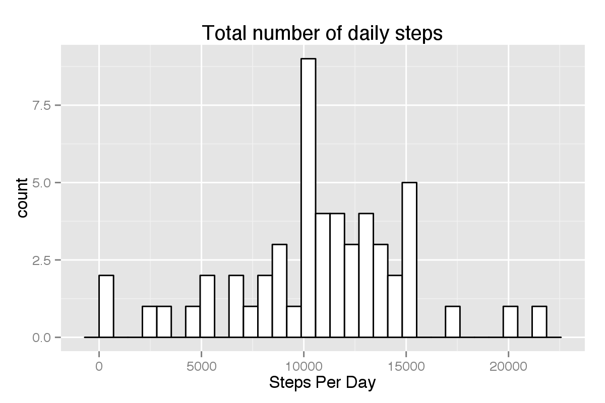
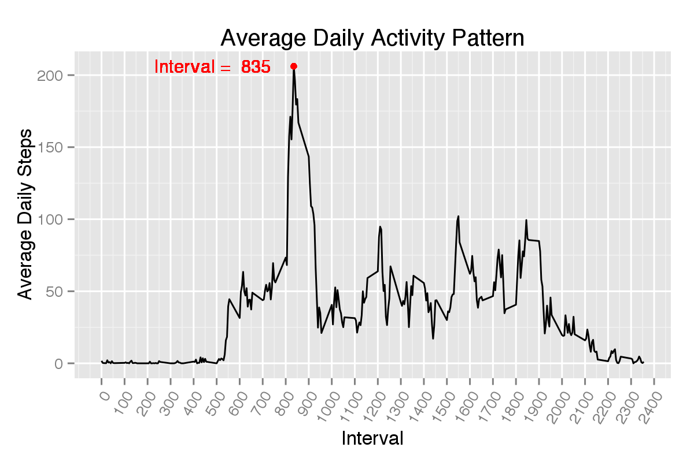
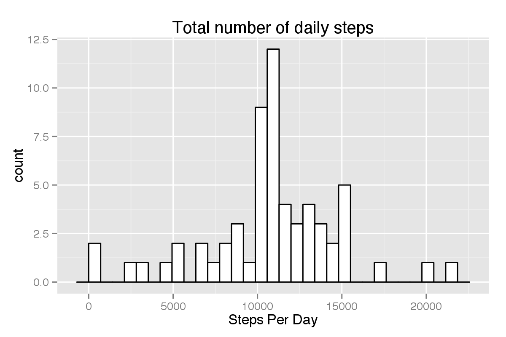
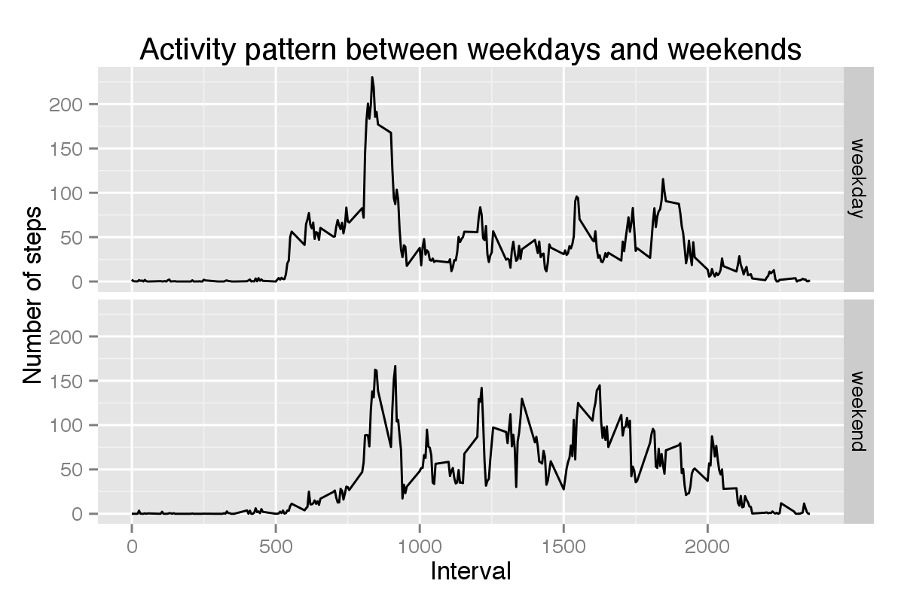

activity = read.csv("activity.csv", header = T)
activity$Date <- as.Date(activity$date, "%Y-%m-%d")act.complete <- activity[complete.cases(activity),]
act.complete <- tbl_df(act.complete)
daily.steps.sum <- group_by(act.complete, Date)%.%
summarize(steps.sum = sum(steps))
ggplot(data = daily.steps.sum, aes(x = steps.sum))+
geom_histogram(fill = "white" , col = "black")+
labs(x = "Steps Per Day", title = "Total number of daily steps")
A histogram of total nubmer of daily steps is plotted. The mean and median total number of steps taken each day are 1.0766 × 104 and 10765 respectively.
daily.steps.mean <- group_by(act.complete, interval)%.%
summarize(steps.mean = mean(steps))
steps.max <- max(daily.steps.mean$steps.mean)
interval.max <- filter(daily.steps.mean, steps.mean == steps.max)$interval
ggplot(data = daily.steps.mean, aes(x = interval, y = steps.mean))+
geom_line()+
scale_x_continuous(breaks = seq(0,2400, by = 100))+
geom_point(col = "red", aes(x = interval.max, y = steps.max))+
geom_text(label = paste("Interval = ", interval.max),
aes(x = interval.max, y = steps.max, hjust = 1.2),
size = 4, col = "red")+
labs(x = "Interval",
y = "Average Daily Steps",
title = "Average Daily Activity Pattern")+
theme(axis.text.x = element_text(angle = 60, hjust = 1))
# geom_point(col = "red", aes(x = date.max, y = steps.max))+
# labs(x = "Date",
# y = "Average Daily Steps",
# title = "Average Daily Activity Pattern")
The average daily acitivty pattern is plotted on the average daily steps against the interval recorded. Shown as a red dot in the plot is the maximum average daily step (206.17), recorded in the 835th interval.
missing.value.N <- sum(is.na(activity$steps))
missing.value.percentage <- missing.value.N/dim(activity)[1]
# find which interval has NA values
date.with.NA <- unique(activity[is.na(activity$steps),]$Date)
act.with.NA <- filter(activity, Date %in% date.with.NA)
g <- group_by(act.complete, interval)%.% summarize(steps.mean = mean(steps))
steps.mean.byInterval <- g$steps.mean
act.with.NA$steps = steps.mean.byInterval
act.imputed <- rbind(act.complete, act.with.NA)Considering the presence of some amount of missing data coded as NA (n = 2304, constiting 13.1% of total data) in he dataset, which may lead to biased conclusion, the imputation, which fills in all the missing data, was performed. Briefly, the mean values at the each 5 min interval across the days was chosed to replace the missing values.
daily.steps.sum.imp <- group_by(act.imputed, Date)%.%
summarize(steps.sum = sum(steps))
ggplot(data = daily.steps.sum.imp, aes(x = steps.sum))+
geom_histogram(fill = "white" , col = "black")+
labs(x = "Steps Per Day", title = "Total number of daily steps")## stat_bin: binwidth defaulted to range/30. Use 'binwidth = x' to adjust this.
After imputation, the adjusted mean and median total number of steps taken each day are 1.0766 × 104 and 1.0766 × 104 respectively.
weekend <- weekdays(act.imputed$Date) %in% c("Saturday", "Sunday")
act.imputed$days = ifelse(weekend, "weekend", "weekday")
act.imputed.su <- group_by(act.imputed, days, interval)%.%
summarize(steps.mean = mean(steps))
ggplot(data = act.imputed.su, aes(x = interval, y = steps.mean))+
geom_line()+
facet_grid(days ~ .)+
labs(x = "Interval", y = "Number of steps",
title = "Activity pattern between weekdays and weekends")
In both cases, the first activity peak occurs approximately before the 1000th interval. When compared to that on weekdays, the activity pattern on weekends is more evenly distubuted as indicated by average daily steps across all the interval recorded.